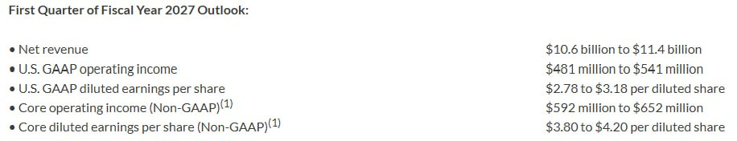

過去 26 小時共 4 則，全部是實質內容，兩個主題：Jabil（JBL）FY26 Q4 法說與 FY27 展望重點，以及 Astera Labs（ALAB）在 Citi TMT 會議的談話。兩則都是對公開法說／會議內容的整理，我已對照逐字稿查證，數字大致吻合，差異處於講解中註明。
JBL 意見是實體 AI 還要兩年以上，公司不直接綁定 frontier labs 而是間接透過 CSP 針對推論的擴展而受惠
FY 27 guide 營收約 yoy+24%，EPS 17.55（yoy+34%），AI 相關營收 144 億 > 221 億（+54%）
- AI infra 需求仍強且持續加速，主流 AI 支出是 frontier labs 訓練前沿模型，Jabil 業務則是在已存在的模型的推論規模化
- AI 工作負載讓更多網路功能進入專屬機櫃，以更高容量系統處理更複雜的拓撲，網路需求隨 AI 使用量成長，並非跟隨單一模型規模成長
- 實體 AI 與機器人能力已就位，但 FY27 幾乎沒有算進指引。部門更名為 Intelligent Devices & Robotics，反映從消費性產品轉向機器人與自動化。倉儲、零售、履約網路的自動化是長期結構性趨勢（因為效率、缺工、生產力）；支援 ASRS、移動機器人、零售科技與自主最後一哩配送
- Symbotic 採購副總現身說法：2024 年初量產，2025 年 6 月達 1 萬台機器人，現逼近 2 萬台
- 人形機器人方面，憑藉複雜自動化與製造經驗，提早介入制動器與機械手等精密機構件
- 自家工廠也在導入實體 AI，包含物料搬運與檢測自動化、電腦視覺做自動光學檢測（AOI），目標是在缺陷發生前預防
- Dastoor 坦言 physical AI 在非常早期的商業化階段，西方世界實際部署可忽略，中國可能領先，但成本與複雜度仍未達全面採用的價位
- 國防與航太（歸在汽車與運輸）將成 FY27 重要成長來源

圖為 Jabil 新聞稿的 FY27 第一季（9–11 月）指引：營收 106–114 億美元、GAAP 營業利益 4.81–5.41 億、GAAP EPS 2.78–3.18、Core 營業利益 5.92–6.52 億、Core EPS 3.80–4.20 美元。
講解
Jabil 是美國大型 EMS（電子代工）廠，AI 相關業務主要是替雲端業者（CSP）組裝伺服器機櫃、網路設備、液冷與電源模組。對照法說逐字稿，貼文數字正確：FY27 營收指引約 445 億美元（+24%）、Core EPS 17.55（+34%）、Core 營業利益率 6.1%（+30bps），AI 相關營收 144 億→221 億（+54%），且預估 FY27 有五個客戶營收超過 10 億美元。
核心論述是「推論 vs 訓練」：CEO Dastoor 說 Jabil 的 AI 業務大多支援日常 AI 使用（推論），而不是前沿模型訓練。意義在於前沿實驗室的訓練資本支出波動大、集中於少數買家；推論需求隨使用量成長，較分散穩定。網路設備那段同理——AI 流量愈大，愈多交換、光通訊功能被拉進專用機櫃。但要注意法說揭露的網路業務帳面成長約 15%，是 45–50% 的 AI 網路底層成長被傳統通訊業務疲弱抵銷後的結果，不是全線高速成長。
實體 AI 部分，貼文開頭「還要兩年以上」是股癌的歸納；逐字稿的說法是 FY27 指引保守、幾乎沒算入，期待之後才有可觀成長，並未明講「兩年」。Dastoor 自己也承認西方部署「可忽略」、中國可能領先——這是很誠實的保留，代表機器人題材短期不貢獻財報。Symbotic（倉儲自動化）採購副總說累計約 2 萬台機器人，是目前最具體的落地案例。部門從 Connected Living & Digital Commerce 更名為 Intelligent Devices & Robotics，屬於定位調整。另外補充：財報優於預期但盤後股價一度下跌約 3%，市場對已高的期待較挑剔。
alab@2026citi conference
對 Asteralabs 而言，最大的槓桿事件是 amd helios 後續世代與 AWS 原生 ual 交換器落地。公司的結論是卡好交換器，不管裡面銅還光，都可以由自己去分配
- 算力需求遠超供給，客戶只能從既有硬體榨出更多產出，呼應 Scorpio X 同顆 GPU 產出更多 tokens/sec 的訴求
- Hopper 世代只掛 Aries retimer (<$100 USD)，到現在 Aries+Taurus+LEO CXL+Scorpio 合計接近 $1000 USD。下一步目標是加上光學後達數千美元/XPU
- Q3 Scorpio 將成為公司營收最大的產品線，X 系列反超 P 系列，公司稱 Scorpio P 是目前 pcie gen 6 出貨量最大的交換器
- CEO 表示不幫 AMD 發言，轉述 AMD 公開說法：MI450 系列採用 UALink over Ethernet，原因是 UALink 交換器尚未可用
- 光學布局分三階段，2027 p1 透過收購 aixscale 取得的玻璃耦合器技術去拿 cpu scale out。2028 p2 主打 200G NPO。第三階段透過自製完整光引擎來獲取最大收益
- 跨櫃 scale-up 方向上，櫃內留銅、跨櫃走光，lane 單價隨 radix 上升
- cluster 從 72 顆擴大到 144/288/576 顆 GPU 時，物理限制使銅不可行，轉入光學（先 NPO）
- 卡好交換器平台就握有系統其餘部分的影響力，銅或光的訊號調理生意都是自己的，分配問題而已
圖為 ALAB 股價：10/5 收 362.34 美元，盤後 366.23（+1.07%）；年初至今 +101.79%，52 週區間 97.89–499.48，市值約 628.6 億美元，本益比約 178 倍；7 月高點後回落，9 月下旬再走升。
講解
Astera Labs 做 AI 伺服器內的「連接」晶片：Aries 是 PCIe/CXL retimer（訊號長距離傳輸時重整訊號）、Taurus 是乙太網路線纜模組、Leo 是 CXL 記憶體控制器、Scorpio 是交換器（P 系列為 PCIe 交換、X 系列為 GPU 間 scale-up 交換）。它的成長故事是「每顆 XPU 上的含量」：從 Hopper 時代不到 100 美元，到現在接近 1,000 美元，目標加上光學後達數千美元——逐字稿原話相符。
Scale-up 指把多顆 GPU 連成一個大記憶體域（如 NVIDIA NVLink），非 NVIDIA 陣營推 UALink 開放標準。AMD 的 Helios 機櫃（MI450）因原生 UALink 交換器尚未可用，先跑「UALink over Ethernet」；逐字稿中 CEO 也說 AMD 會同時提供兩種選項，所以「後續世代改用原生 UALink 交換器」是 ALAB 的上行機會，但目前尚未發生，貼文稱之為「最大槓桿事件」是合理的觀察，非已確定的訂單。
光學路線：機櫃內距離短，銅線最便宜省電；當叢集擴到 144/288/576 顆 GPU 跨機櫃，銅線傳不遠，必須轉光。NPO（近封裝光學）是介於可插拔光模組與 CPO（共封裝光學）之間的過渡方案。時程上有小出入：逐字稿說第二階段 200G NPO 是 2027–2028，貼文寫 2028；第一階段是 aiXscale 的連接器元件銷售。公司也承認交換器市場將有競爭者進入（「不是零和遊戲」）。
需注意：Citi TMT 會議實際在 2026 年 9 月 9 日舉行，這則是約一個月前會議的整理，並非新消息。股價本益比約 178 倍，代表市場已預先反映大量成長預期。
備註：昨天（10/05）資料夾存在但為 0 則，故 #6463 首次出現在今天的視窗中。